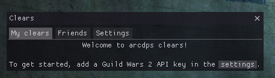
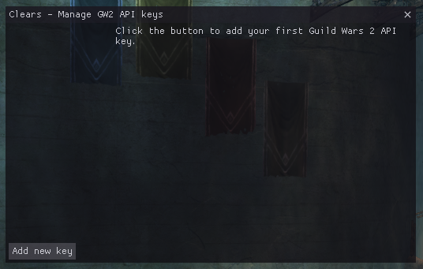
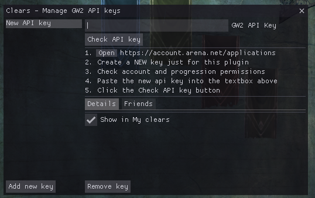

Introduction
arcdps clears is an addon for arcdps that shows raid clears within the game.
This guide shows how to install and use the addon.

Webpage
The addon has a webpage, where you may also download it.
Contributing
The source code is available on GitHub: this guide, arcdps clears. You may also report issues and feature requests there in the respective repositories. Pull requests are also welcome.
License
Both this guide and arcdps clears is licensed under the MIT license.
Installation
Requirements
You may need to install the latest Visual C++ redistributable (download from Microsoft, article).
Manual installation (dll files)
arcdps clears is an addon for arcdps, and as such, requires arcdps to run. This guide assumes that you already have arcdps installed.
- Install arcdps.
- Download the latest version of the clears addon.
- Place
arcdps_clears.dllintoGuild Wars 2/bin64(should be the same directory as other arcdps addons).
Using the Mod Manager (UOAOM)
- Get the Unofficial Addon Manager (installation guide).
- Run the Addon Manager.
- Select both arcdps and arcdps clears.
- Install.
Verifying the installation
If everything worked correctly, you should be able to see the Clears window in the arcdps settings. The default key combination to open these settings is Shift+Alt+T.

You can also check the exact version that is loaded in the About tab:
Next step
To get started with the addon, read Adding an API key.
Adding API keys
To show your clears, the addon needs an API key to access clear data from the official Guild Wars 2 API.
Required permissions:
account,progression.
You should create a new API key. Do not reuse a key from another application. Really, do create a new one.
- Creating an API key describes how to create an API key.
- Adding an API key describes how to add it to the addon.
Creating an API key
In this step, you should create a new API key. Do not reuse a key from another application. Really, do create a new one.
- Go to https://account.arena.net/applications and log in.
- Create a new API key with the progression permission:

- Copy the new key into your clipboard by using the copy icon:

Next step
Now that you have a new API key, you can add it to the addon.
Adding an API key
Opening the Clears window
To get started, open the Clears window. Open the arcdps settings (Shift+Alt+T
by default) and click the checkbox to open the Clears window.
Alternatively, you can use the keybind to open the window (Shift+Alt+C by default).
The Clears window

The clears window should now appear and prompt you to add an API key. To continue, click the settings button to open the API key settings.
You can also access the API key settings by going to the Settings tab and
clicking the Manage GW2 API keys button.
The API key management window
The API key management window will look like this when there are no API keys added yet:

To continue, click the Add new key button.

Adding the API key
- Copy your new key into your clipboard by using the copy icon:
- Paste the key into the
GW2 API Keytextbox:

- Click the
Check API keybutton.
If everything went right, the window should now list your account name:

If there were any issues, the window will tell you what went wrong.
Adding more keys
If you have multiple accounts, you can add multiple keys here. If you want to see clears of your friends, check out Friends instead.
Next step
Now that your API key is added, you may check your clears.
Checking your clears
Opening the Clears window
To see your raid clears, open the Clears window. There are multiple ways how to do it:
- Use the keybind to open the window (
Shift+Alt+Cby default). - Open the arcdps settings (
Shift+Alt+Tby default) and click the checkbox to open the Clears window:
The clears window
The clears window has multiple tabs: My clears, Friends, Settings.

My clears
This tab shows raid clears of all your accounts. You may add multiple API keys if you have multiple accounts, and they will all be shown here. By default, finished encounters are shown in green and unfinished encounters are shown in red.
There are many customization options, including:
- 3 different table styles,
- the account name may be hidden,
- wing and boss numbers may be hidden,
- colors may be changed.
Clears may take a few minutes to update after encounters are finished. This is caused by delays in the official GW2 API.
Choosing shown accounts
If you have multiple accounts added, you may choose which of them should be
shown and which should be hidden. This may be done in the API key management
window, or by right-clicking the window and checking the corresponding checkboxes
in Shown accounts.
Friends
This tab shows raid clears of friends you add in the addon. For more details, read friends.
This tab has separate style settings from My clears.
Settings
This tab contains all settings for the addon. Alternatively, the very same
settings may also be accessed in the Extensions tab in arcdps settings.
Keybinds
The addon provides keybinds that make it easier to open its windows. The used modifiers are the same as for arcdps (Shift+Alt by default).
The keybinds are:
- open Clears window (Shift+Alt+C by default)
- open API keys window (disabled by default)
Changing keybinds
To change keybinds, go to the addon settings. The keybinds are located in the
Keyboard shortcuts collapsible section.
The keybinds use virtual key codes. If you input a number, you can also see the corresponding key name to the right of the textbox. These names may be affected by your keyboard layout, you may need to do a bit of experimentation.
Common key codes are listed here.
Default area stats keybind in arcdps (C)
The C keybind has a collision with arcdps itself; it uses Shift+Alt+C to open the area stats window by default. This keybind is seldom used and C makes perfect sense for clears. If you desire to restore the original keybind for arcdps, change the keybind in clears as it has priority.
Key codes
This is a list of common key code values that may be used for keybinds, along with names of keys they correspond to. Keep in mind that these may be affected by the keyboard layout; you may need to do a bit of experimentation.
The values are Windows virtual-key codes defined in Winuser.h.
Key code table
| Key name | Code |
|---|---|
| BACKSPACE | 8 |
| TAB | 9 |
| CLEAR | 12 |
| ENTER | 13 |
| PAUSE | 19 |
| CAPS LOCK | 20 |
| ESCAPE | 27 |
| SPACEBAR | 32 |
| PAGE UP | 33 |
| PAGE DOWN | 34 |
| END | 35 |
| HOME | 36 |
| LEFT ARROW | 37 |
| UP ARROW | 38 |
| RIGHT ARROw | 39 |
| DOWN ARROW | 40 |
| 0 | 48 |
| 1 | 49 |
| 2 | 50 |
| 3 | 51 |
| 4 | 52 |
| 5 | 53 |
| 6 | 54 |
| 7 | 55 |
| 8 | 56 |
| 9 | 57 |
| A | 65 |
| B | 66 |
| C | 67 |
| D | 68 |
| E | 69 |
| F | 70 |
| G | 71 |
| H | 72 |
| I | 73 |
| J | 74 |
| K | 75 |
| L | 76 |
| M | 77 |
| N | 78 |
| O | 79 |
| P | 80 |
| Q | 81 |
| R | 82 |
| S | 83 |
| T | 84 |
| U | 85 |
| V | 86 |
| W | 87 |
| X | 88 |
| Y | 89 |
| Z | 90 |
| SLEEP | 95 |
| NUMPAD0 | 96 |
| NUMPAD1 | 97 |
| NUMPAD2 | 98 |
| NUMPAD3 | 99 |
| NUMPAD4 | 100 |
| NUMPAD5 | 101 |
| NUMPAD6 | 102 |
| NUMPAD7 | 103 |
| NUMPAD8 | 104 |
| NUMPAD9 | 105 |
| MULTIPLY | 106 |
| ADD | 107 |
| SEPARATOR | 108 |
| SUBTRACT | 109 |
| DECIMAL | 110 |
| DIVIDE | 111 |
| F1 | 112 |
| F2 | 113 |
| F3 | 114 |
| F4 | 115 |
| F5 | 116 |
| F6 | 117 |
| F7 | 118 |
| F8 | 119 |
| F9 | 120 |
| F10 | 121 |
| F11 | 122 |
| F12 | 123 |
| F13 | 124 |
| F14 | 125 |
| F15 | 126 |
| F16 | 127 |
| F17 | 128 |
| F18 | 129 |
| F19 | 130 |
| F20 | 131 |
| F21 | 132 |
| F22 | 133 |
| F23 | 134 |
| F24 | 135 |
| ; | 186 |
| = | 187 |
| , | 188 |
| - | 189 |
| . | 190 |
| / | 191 |
| ` | 192 |
| [ | 219 |
| \ | 220 |
| ] | 221 |
| ' | 222 |
| < | 226 |
How to use Friends
The Friends tab allows you to see clears of other players who also use arcdps clears.
To get started, go to the Friends tab and click Enable Friends. This will submit
subtokens to the friends server (you can check which of your API data is
shared on the privacy page).
Adding friends
First, to add a friend, your friend must make their clears accessible to you. This can be done by setting their clears to public, or by adding you as a friend.
The Friends tab has a button that opens the friend list, where you may add
a friend by typing their account name. A new row will be added to the friend
list. In case the last column shows not known, they are either not using
arcdps clears, or they have not shared their clears with you. Make sure you
haven't made any typos in their name, and don't forget the number part of their
name.
In case there is no number part in an account name (this is very rare), try adding .0000 to their name.
Sharing your clears
You can configure how your clears are shared for each API key in the GW2 API key management window.
You can open the management window by clicking the Share clears button in the
Friends tab or you can use the Manage GW2 API keys button in the settings.
After selecting an API key in the management window, you can change the
settings in the Friends tab in the right pane.
There are three subtoken sharing settings:
- Everyone – anyone may request your clear data (everyone is your friend),
- Friends only – only players you select get access to your clear data,
- Do not share – nobody has access to your clear data.
Reordering, hiding, and removing friends
The Friends button in the Friends tab opens a list of friends, where you may:
- reorder friends by using the arrows in the first column,
- hide friends by toggling the checkbox in the
Shown column, - remove friends by clicking the
Removebutton.
The last column may show special notes about the friends. The most notable note
is not known, which indicates that the account name is unknown, or the owner
of the account hasn't shared their clears with you.
Styling
The Friends tab has separate style settings from the My clears tab. It
defaults to the single-line table layout as there may be many friends. As with
My clears, you can right-click the window to edit the style settings.
Friends Privacy
TL;DR
- Your friends get a daily subtoken with restricted access to clear data and masteries (why masteries?). If you revoke their access, they will lose access within one day.
- The friends server also knows a few extras that might be added in the future (dungeons, worldbosses and achievements), your account name, and some extra account data that is not used.
There are three subtoken sharing settings:
- Everyone – anyone may request a subtoken with your clear data (everyone is your friend),
- Friends only – only players you select get access to your clear data,
- Do not share – nobody gets access to your clear data.
Detailed description
Through the magic of GW2 API subtokens, the friends server has access to the following, and nothing else:
/v2/tokeninfo– used to verify token validity,/v2/account– used to access account name, this is never shared further to avoid impersonation,/v2/account/masteries– used to access thelast_modifiedinformation with minimal information leaks about the account,/v2/account/raids– used to access raid clear status,/v2/account/achievements– may be used in the future to add features that require checking achievements,/v2/account/dungeons– may be used in the future for dungeon clears,/v2/account/worldbosses– may be used in the future for world boss clears (unlikely),/v2/createsubtoken– used to further restrict information when sharing to friends.
Your friends get short-term subtokens of the server's subtoken and their access is limited to:
/v2/account/raids– raid clear data/v2/account/masteries– used to get the time of the last account data update; this is needed to correctly handle raid clear resets
Notably, the subtoken that is shared with friends does not give any access to the account name, so it cannot be used to impersonate you.
The subtokens shared with your friends have an expiration of less than 1 day from creation. If you revoke their access to the data, they will not be get a new subtoken, which means they lose access within one day. This is required as the only other way to revoke access is to delete the entire API key.
Why the masteries
The raid clear data in the GW2 API does not get updated if you are offline. If there was a raid reset since the last update, it will still say that you finished some encounters until you log in.
For this reason, we need to know the last modification date of the clear data to properly show your clears. For that, we need to do a request to another endpoint. We chose the masteries endpoint because it reveals the least information of all the options. It doesn't allow for impersonation, as there is no account name available.